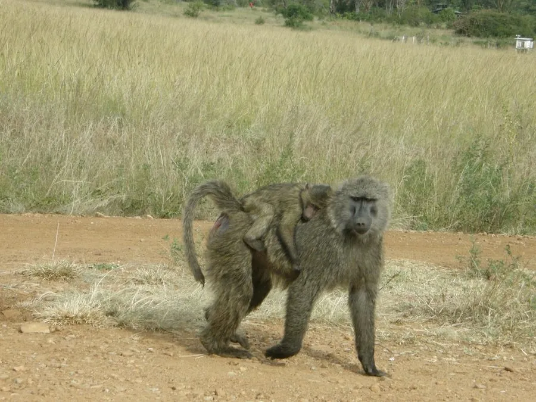

哺乳动物 · 动物界
东非狒狒 Papio anubis

非洲稀树草原上最常见的大型猴类之一，毛色橄榄灰褐，吻部似犬，雄性颈肩长有浓密鬃毛，成群活动，杂食而机警。
- 分类
- 门脊索动物门纲哺乳纲目灵长目科猴科属狒狒属
- 栖息环境
- 撒哈拉以南的稀树草原、灌丛、河谷疏林与农田边缘，多在靠近水源处活动
- 地理分布
- 非洲撒哈拉以南，自马里、埃塞俄比亚至肯尼亚、坦桑尼亚等地
- 保护级别
- IUCN 无危（LC）
物种志
东非狒狒体长 50–115 cm，尾长约 38–58 cm，雄性体重 24–37 kg，雌性约 14–20 kg，雌雄体型差异明显。全身覆橄榄灰褐色长毛，面部裸露呈暗灰色，吻部前突似犬，雄性颈肩长有一圈浓密鬃毛，臀部有厚实的胼胝，可长时间坐卧。
它们栖息于撒哈拉以南的稀树草原、灌丛和疏林，从马里、埃塞俄比亚一直分布到肯尼亚和坦桑尼亚，常靠近河流、水塘与村庄。群体由多只成年雌雄及后代组成，规模约 15–150 只，等级严格，靠理毛、叫声和姿态维持关系。食物包括果实、草籽、块根、昆虫、鸟卵和小型兽类。妊娠期约 180 天，每胎一仔，寿命约 20–30 年；豹和狮子是主要天敌。
形态与习性
- 食性果实、草籽、块根、昆虫、鸟卵和小型兽类
- 体长50–115 cm，尾长 38–58 cm
- 体重雄性 24–37 kg，雌性 14–20 kg
- 寿命野外约 20–30 年
- 繁殖妊娠期约 180 天，每胎一仔
- 社会结构15–150 只的稳定群体，等级分明
趣味知识
- 东非狒狒的犬齿发达，雄性常以张口打哈欠的方式展示牙齿、威慑对手。
- 它们有颊囊，可临时储存食物，边行走边取食时十分方便。
- 群体成员通过互相理毛建立联盟，理毛对象往往决定了个体的地位。